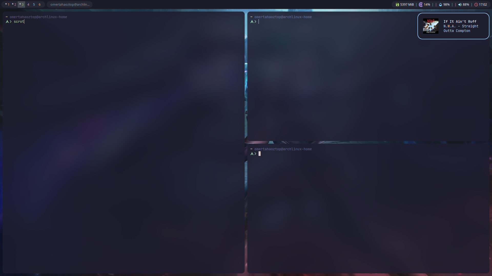

Arch Linux Kurulum Sonrası
Bu Blog yazımda geliştirme ortamımı nasıl sıfırdan kuracağımı anlatacağım.
Github Reposu
Sıfırdan kurulum için git repoma ihtiyacım var; Repom
Kurulum Aşaması
Repoda sıfırdan kurulum için iki dosyaya ihtiyacım var;
Scriptlerin Açıklaması
- bspwm.sh Scripti BSPWM için gerekli paketleri ve bağımlılıkları kurup konfigürasyon dosyalarımı içeren klasörleri yeni kurulum yapılacak bilgisayarda ilgili yerlere kaydediyor.
- packages.sh Scripti ise genellikle Linux ortamımda kullandığım paketleri içeriyor.
Scriptlerin Çalıştırılması;
bash bspwm.sh
bash packages.sh
Ekran Görüntüsü

Yorumlar yüklenmezse JavaScript'i etkinleştir.